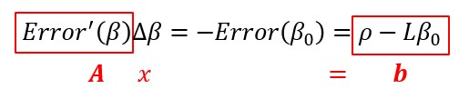

2. Camera Calibration for Underwater 3D Reconstruction Based on Ray Tracing using Snell’s Law¶
2.1. Introduction¶
使用斯涅尔定律描述在介质界面（例如边界）处发生的折射：
其中 \(\theta\) 是表面法线和光线之间的夹角， \(v\) 是光速， \(n\) 是相应介质的折射率。
下图说明了折射如何影响相机。在这里，多束光线从水传播到空气，直到被相机镜头捕获为止。说明了光线在进入相机光圈之前由于折射而如何弯曲。 透明相机代表由折射引起的虚拟视点。
折射本质上使相机体验到了从 \(n\) 个视点（ \(vp_n\) ）观察到的场景，从而使单个视点的假设无效。
2.2. Ray Tracing using Snell’s Law¶

- 步骤
相机标定
将2D点投影到射线中
识别平面射线的相交点
计算折射射线
使用射线进行三角测量
2.2.1. Camera Calibration¶
外参描述了从世界坐标到摄影机坐标的转换，而内参描述了摄影机坐标与图像中2D像素坐标之间的关系。
- 内参
使用张正友标定法使用
空气中的棋盘格进行标定，为每个摄像机捕获25张图像。- 外参
通过手动确定水面和水箱角落之间的交点，可以找到所需的点对应关系。使用每个摄像机的四个3D-2D点对应关系找到外参。
使用基于Levenberg-Marquardt优化的迭代方法，最小化每个摄像机中四个点的重投影误差进行迭代。 此方法依赖于内参，因为它们用于计算重投影误差，即相机坐标和图像坐标之间的3D到2D转换。
2.2.2. Projecting a 2D Point Into a Ray¶
将2D图像坐标投影到世界空间坐标系中的射线中。每个射线的特征是：
其中 \(\overline{r}\) 是射线的方向， \(r_0\) 是射线上的点， \(\lambda\) 定义了沿射线的所有坐标。
方向向量 \(\overline{r}\) 可以被描述为：
其中 \(R^{-1}\) 是相机的旋转矩阵的逆矩阵， \(K^{-1}\) 是相机内参矩阵的逆矩阵， \([x~~~y]^T\) 是2D点的背向投影到射线中的图像坐标。
注解
实际上就是像素坐标系到世界坐标系的转换（为什么 \(t\) 没有了？）
沿光线的点 \(r_0\) 设置为相机中心，因为向后投射的光线必须通过此位置，可以通过以下方法找到该位置：
其中 \(t\) 是外参的位移向量
2.2.3. Identifying the Plane-Ray Intersection¶
为了找到折射，必须找到射线与介质界面平面之间的交点。
例如，分隔空气和水的平面。
确定该点本质上是识别 \(\lambda_0\) 的问题，使得 \(r(\lambda_0) = p\) ，其中 \(p\) 是平面上的一个点。 这一点 \(p\) 必须满足平面方程：
其中， \(n\) 是平面法线， \(p_0\) 是平面上的已知点。 然后将组合等式：
然后可以通过将 \(\lambda_0\) 插入等式 \(r(\lambda) = \lambda(\overline{r}) + r_0\) 来找到平面与射线 \(I\) 的交点：
注解
上述计算需要了解平面范数 \(n\) ，可知为 \(n = v_1 \times v_2\) 。
向量 \(v_1\) 和 \(v_2\) 是平面上的两个向量，可以从平面上的三个非共线点中找到。
这三个点是从相机校准期间手动标注的点集中提取的。 也可以从这些手动注释的点中选择平面上所需的已知点 \(p_0\) 。
2.2.4. Calculating the Refracted Rays¶
射线在介质之间的交点处的折射 \(r(\lambda)\) 是根据斯涅尔定律计算的。
以下描述了计算传入向量 \(r\) 的折射向量 \(r'\) 的步骤：
计算余弦角 \(\theta_1\)：
\[cos(\theta_1) = - \overline{n} · \overline{r}\]其中 \(\theta_1\) 是 \(\overline{R}\) 和介质之间的表面法线 \(\overline{n}\) 之间的夹角。
计算余弦角 \(\theta_2\)：
\[cos(\theta_2) = \sqrt{1 - (\frac{n_1}{n_2})^2(1 - cos(\theta_1)^2)}\]其中 \(\theta_2\) 是 \(\overline{r}'\) 和 \(\overline{n}\) 的夹角。
注解
- 证明
- \[\because \frac{n_1}{n_2} = \frac{sin(\theta_2)}{sin(\theta_1)}\]\[\begin{split}\begin{eqnarray} \therefore &\sqrt{1-(\frac{n_1}{n_2})^2(1-cos^2(\theta_1))} \\ =& \sqrt{1 - (\frac{sin(\theta_2)}{sin(\theta_1)})^2 sin^2(\theta_1)}\\ =& cos(\theta_2) \end{eqnarray}\end{split}\]
描述折射向量 \(\overline{r}'\) ：
\[\overline{r}' = (\frac{n_1}{n_2}) \overline{r} + (\frac{n_1}{n_2} cos(\theta_1) - cos(\theta_2)) \overline{n}\]其中， \(n_1\) 是射线穿过前的介质的折射率， \(n_2\) 是射线穿过后的介质的折射率。
注解
对于放在水箱前面的摄像机，分别将 \(n_1 = \) 用于介质是空气和水。
没有考虑到由水族箱的塑料或玻璃面引起的折射，因为影响很小，但大型鱼缸的侧面非常厚。
2.2.5. Triangulation using Rays¶
最后一步是使用来自各个摄像机的折射光线 \(r_1(\lambda)'\) 和 \(r_2(\lambda)'\) 对2D图像坐标的3D坐标进行三角测量。
折射光线仍然满足公式 \(r(\lambda) = \lambda(\overline{r}) + r_0\) ，并使用折射方向矢量 \(r'\) 以及平面射线交点 \(I\)
采用的三角剖分方法通常称为中点算法。思想是识别两条射线 \(r_1(\lambda)'\) 和 \(r_2(\lambda_2)'\) 之间的向量 \(\overline{m}\) ，以使长度 \(||\overline{m}||\) 被最小化。 最终的3D位置是向量 \(\overline{m}\) 的中点。
中点算法基于以下事实：当 \(\overline{m}\) 垂直于两条光线时， \(||\oberline{m}||\) 的长度是最小的。
因此，主要思想是确定一个向量，使得：
其中 \(\overline{r_1}\) 和 \(\overline{r_2}\) 是两条折射光线的方向向量。
通过计算沿折射光线的向量的起始位置 \(M_1\) 和结束位置 \(M_2\) ，可以找到向量 \(m\) 。 这两个点可以由以下公式计算：
其中 \(I_1\) 和 \(I_2\) 是两个视图的平面射线交点。
最终的3D坐标 \(P\) 的位置为：